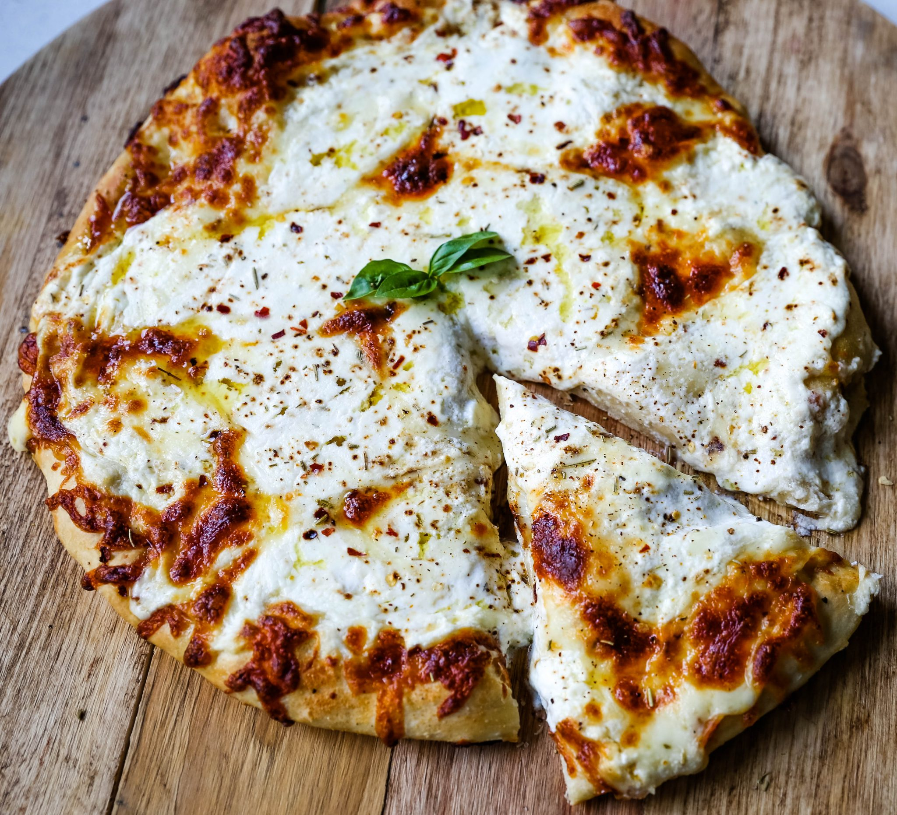

Pizza casera

Ingredientes:
- 500g de harina
- 25g de levadura fresca
- 1 cucharadita de sal
- 1 cucharadita de azúcar
- 300ml de agua tibia
- 4 cucharadas de aceite de oliva
- 200g de salsa de tomate
- 200g de queso mozzarella
- 1 cebolla
- 1 pimiento verde
- 100g de champiñones
- 100g de jamón
index/Pizza/pizza.html
- Orégano al gusto
Tiempos:
- Preparación: 30 minutos
- Cocinar: 1 hora y 15 minutos
- Total: 1 hora y 45 minutos
Pasos:
- En un bol, mezclar la harina con la sal y el azúcar.
- Desmenuzar la levadura en un poco de agua tibia y añadir a la mezcla anterior.
- Añadir el resto del agua tibia y el aceite de oliva, y amasar hasta obtener una masa homogénea.
- Cubrir el bol con un paño húmedo y dejar reposar la masa durante una hora en un lugar cálido.
- Preparar los ingredientes: cortar la cebolla, el pimiento y los champiñones en rodajas finas.
- Una vez que la masa haya reposado, precalentar el horno a 220°C.
- Estirar la masa con un rodillo y colocarla en una bandeja para horno previamente engrasada.
- Cubrir la masa con la salsa de tomate, dejando un borde libre alrededor.
- Añadir el queso mozzarella y los ingredientes preparados anteriormente.
- Espolvorear orégano al gusto.
- Introducir la pizza en el horno durante unos 15-20 minutos, hasta que esté dorada y crujiente.
- Servir caliente.
- DISFRUTAR!!!! 😋😋😋